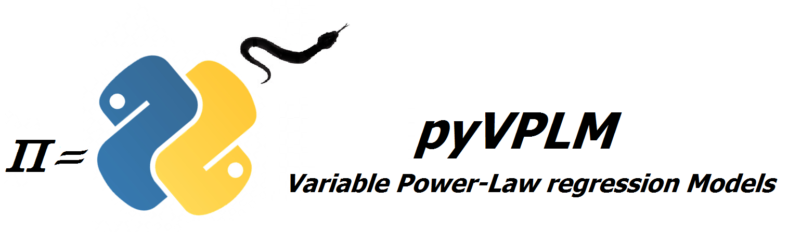
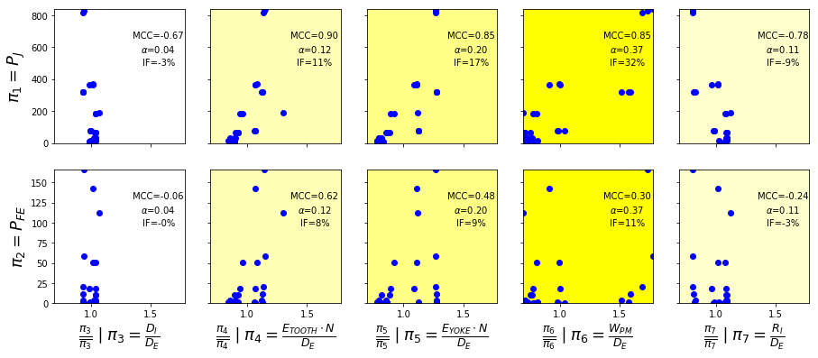
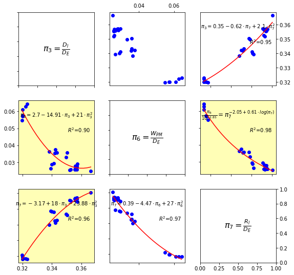
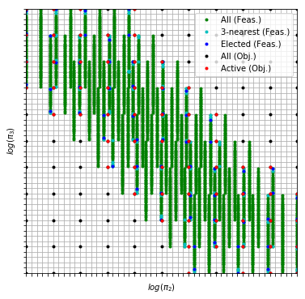
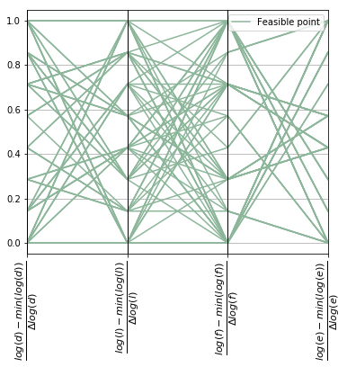
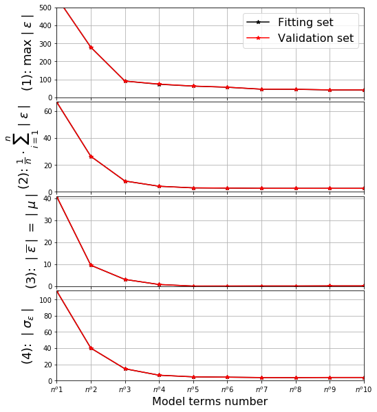
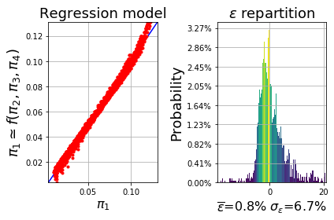

About¶
pyVPLM is a package that is developed to help scientist, engineer, etc., to construct power-law and/or polynomial regression models on different type of data such as finite-element simulation results, manufacturer data-sheets…
It integrates various functionalities such as :
Model parameters reduction based on Buckingham Theorem dimensional analysis and Pint package with derived functions.
Sensitivity and dependency analysis on dimensionless parameter and limited experiments to simplify further model expressions.
Construction of optimized experimental design on feasible-physical variables leading to full-factorial design within dimensionless space. Those DOE are the inputs of parametrized finite-element models.
Regression models construction with increasing complexity (terms sorted based on their impact) and validation based on relative error repartition analysis.
Capabilities¶
Dimensional analysis¶
The dimensional analysis has to be conducted on a defined set of physical parameters. It can be performed using alternatively buckingham_theorem which will return the default solution or automatic_buckingham which will propose different alternate sets.
Based on the obtained solutions, advanced user can also define manually a new solution set with force_buckingham function.
from pyvplm.core.definition import PositiveParameter, PositiveParameterSet
from pyvplm.addon.variablepowerlaw import buckingham_theorem
d = PositiveParameter('d', [10e-3, 150e-3],'m', 'pipe internal diameter')
e = PositiveParameter('e', [.1e-3, 10e-3], 'm', 'pipe thickness')
parameter_set = PositiveParameterSet(d,e)
pi_set, _ = buckingham_theorem(parameter_set, track=False)
Sensitivity & dependency analysis¶
Once dimensional analysis is done, there may be still a huge number of dimensionless parameter to describe a performance criteria (mostly form factor) and DOE construction phase may lead to big experiments number and long simulation times.
This is to answer this problematic that pi_sensitivity and pi_dependency functions have been designed. The obtained graph for analysis are based on primary vs. secondary parameters analysis that can be easily adapted using configuration parameters:


Optimized design of experiments¶
The non-constrained nor reduced experimental set are defined using pyDOE2 package. It integrates automatic sizing of physical/dimensionless initial test plans and functions for selection based on distance criteria (dimensionless mapping) and spread quality (physical mapping).


Regression models construction¶
The regression_models function interpolate results to fit a given order polynomial model within linear or logarithmic space. Within log space, the model obtained can be transformed into variable power-law model, indeed:
$$
log(\pi_0) = a_0+a_1 \cdot log(\pi_1) + a_{11} \cdot log(\pi_1)^2+a_{12} \cdot log(\pi_1) \cdot log(\pi_2) + a_2 \cdot log(\pi_2) +…
$$
Can be expressed in the following form:
$$
\pi_0 = 10^{a_0} \cdot \pi_1 ^{a_1 + a_{11} \cdot log(\pi_1)+a_{12} \cdot log(\pi_2)+…} \cdot \pi_2^{a_2+…} \cdot …
$$
This is the origin of package name since variable power-law model is one of the current research subject of MS2M team in ICA Laboratory (Toulouse-France).
Regression coefficients are sorted with increasing magnitude while considering standardized values regression (first order terms are selected at the beginning to avoid singularity issues):

The four criteria to evaluate model fidelity with leave-one-out cross-validation are:
Maximal relative error magnitude
Average value of the magnitude of relative error which is a good indicator of both average and standard deviation
Average value of the relative error
Standard deviation of the relative error
On this example with 2 dimensionless parameters and order 3 polynomial expression, a 5-terms model seems to have good representation capabilities.
Once regression models have been constructed, each one of them can be analyzed trough the analysis of their relative error using perform_regression function:

Examples and notes¶
Four Jupyter Notebooks have been developed to present tool capabilities and functions. They can either be launched using .batch files from master/notebooks folder for windows users, or launching Jupyter Notebook application and opening .ipynb files from master/docs/source/_static/Pyhton_Notebooks folder.
Additional documentation on sub-packages (pyvplm.core, pyvplm.addon) and functions can be find on the interactive documentation master/docs/build/index.html which can be launched within windows operating system with double-click command on User guide.bat file.
Requirements¶
The packages uses different additional libraries to the two named before (numpy, pandas…) most of them coming with anaconda install. The complete set of necessary packages are summed up in requirements.txt file and checked during the install process.
Install¶
To install pyVPLM, follow those three steps:
Download pyVPLM source code folder
pyvplm-master:Go to GitHub, download the repository in any directory.
Add path to Anaconda:
Open an Anaconda terminal and navigate to the master directory just copied (use
cdcommand to change directory).Add path using command
pip install -e ./(be sure to pip from conda:conda install pip).
Or add library permanently to Anaconda:
Open an Anaconda terminal and navigate to the master/dist directory just copied (use
cdcommand to change directory).Install library using wheel with command
pip install pyVPLM-version-py3-none-any.whl(be sure to pip from conda:conda install pip).
Launch unittest to check the installation:
Change directory to
./pyvplm/testswithin terminal and launch commandpython -m unittest.
License¶
This project is under MIT License [https://opensource.org/licenses/MIT]
Credit¶
pyVPLM is an adaptation of the work performed by MS2M team at ICA Laboratory - France and covers the work done during different doctorate thesis:
Copyright (C) 2014 - 2017 - Florian Sanchez
Copyright (C) 2017 - 2019 - Francesco De Giorgi
Author¶
References¶
F. Sanchez, M. Budinger, I. Hazyuk, “Dimensional analysis and surrogate models for thermal modeling of power electronic components”, Electrimacs conference (2017), Toulouse
F. Sanchez, M. Budinger, I. Hazyuk, “Dimensional analysis and surrogate models for the thermal modeling of Multiphysics systems”, Applied Thermal Engineering 110 (August 2016)